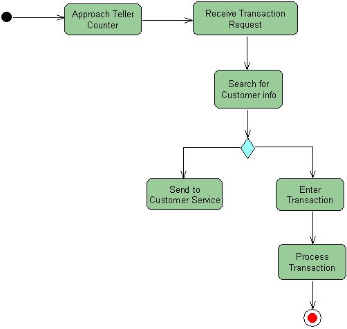

Activity diagrams are useful in showing workflow connections and describing behavior that has a lot of parallel processing. When you use an Activity diagram, you can choose the order in which to do things. This kind of diagram states essential sequencing rules for an activity.
By using initial nodes, invocations, activity edges, decisions, and final nodes, you can quickly model a business process. The IDE's UML Modeling feature lets you do the following:
